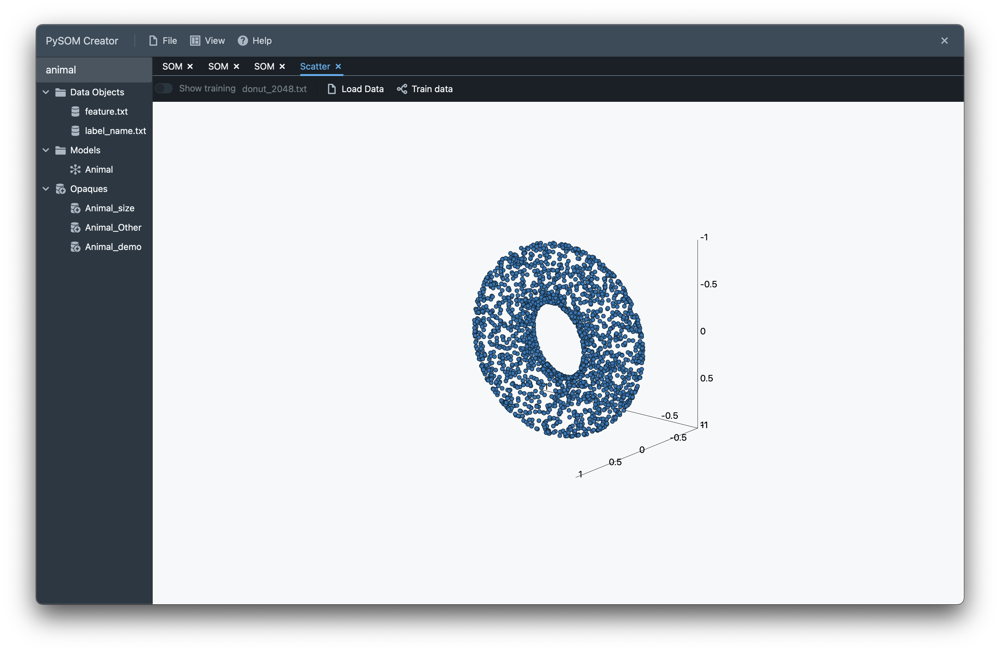
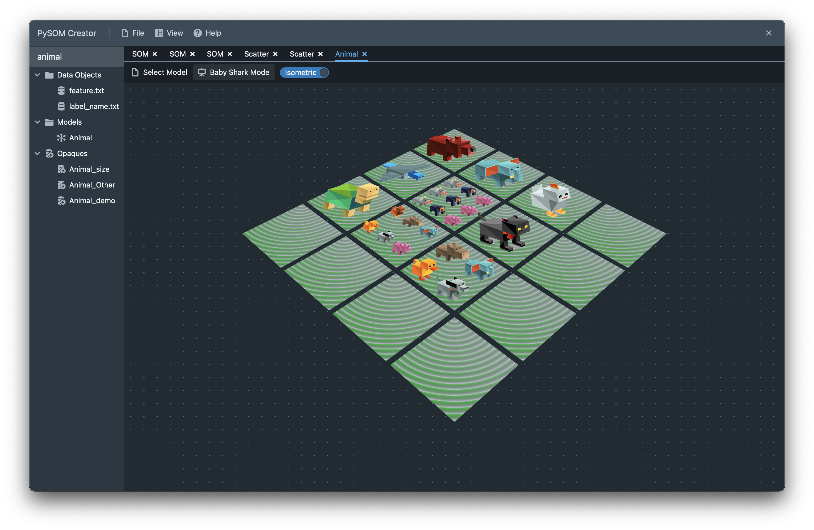

PySOM Creator Helper Tools¶
Unfortunately due to the work-in-progress status and lower priority of the front-end visualisation tools for this project, much of this page is not yet built. Come back another time when it is ready, or scavenge around below to see what is available.
SOM Viewer¶
Can be found in the menu View->SOM. SOM opaques can be input into this and
visualised as shown below. The slider controls the level of clustering in
an exploded view (maximum slider) or as the original 2D map (minimum slider).
3D Scatter Plot Visualiser¶
Can be found in the menu View->Scatter. Plots the numerical data imported into 3-dimensional space. If training data is selected corresponding to the loaded data, then a slider can be enabled to show a visualisation of the training process.
Other¶
Unfortunately, Image, Reddit Post Graph, Animals, Terrain Generation, Mushroom Forest are currently either disabled or nonfunctional for at this point in time.
